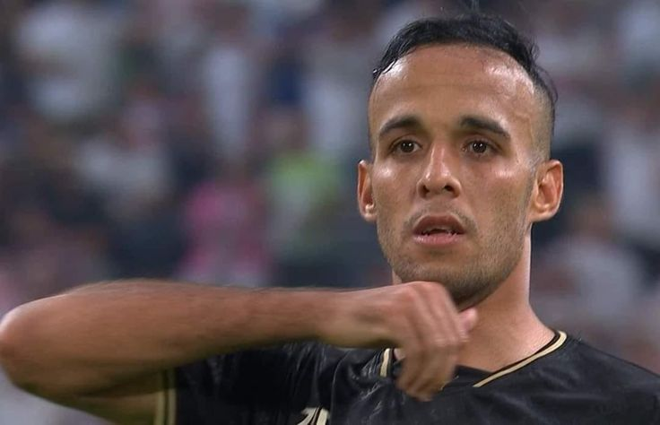

الرجل الذي اشعل النيران في الجزيرة

!ناصر منسي.. السوبر مان اللي رجع للحياة بهدف القرن
فيه لعيبة بتتولد علشان تكتب اسمها بحروف من دهب في تاريخ الزمالك، وناصر منسي واحد منهم.
المهاجم اللي ناس كتير
شككت فيه، واللي مر بفترات صعبة، رجع للحياة الكروية بهدف عملاق في السوبر، الهدف اللي قلب كل الموازين وخلّانا
كلنا نهتف باسمه!
رحلة مقاتل مش مجرد مهاجم
ناصر منسي بدأ مشواره في الشمس، وبعدها لعب للداخلية، بيراميدز، طلائع الجيش، والبنك الأهلي، قبل ما يوصل
للزمالك في 2022. وكتير من جماهير الزمالك كانوا مستنيين يشوفوا منه حاجة، لكن الظروف مكانتش في صالحه، لحد ما
جه اليوم اللي أثبت فيه نفسه، اليوم اللي بقى فيه "سوبر منسي"!
سوبر القرن.. لحظة الخلود
ماتش السوبر الإفريقي 2024، الزمالك قدام الأهلي، وكل حاجة بتقول إن الزمالك راجع بالكأس. لكن الأهلي يسجل،
والقلق يسيطر. فجأة، في الدقيقة 76، يظهر الأسد، يظهر ناصر منسي، يطير على العرضية، يحط الكورة في الشبكة،
والجماهير تنهار من الفرحة! الهدف اللي رجع الزمالك للحياة، الهدف اللي مدد الماتش لضربات الجزاء، واللي كان
بوابة الزمالك للتتويج.
منسي اللي مش هيتنسي
بعد الماتش، منسي قال بكل ثقة: "هدفي في السوبر أحسن من هدف أفشة في نهائي أفريقيا 2020"، وكلامه كان عن ثقة مش
غرور، لأنه فعلاً هدفه كان علامة فارقة، هدف صنع تاريخ. الجماهير بدأت تهتف باسمه، وتلقبه بـ"السوبر منسي"، لأنه
فعلاً بطل اللحظة، الراجل اللي قلب كل التوقعات وأثبت إنه ابن الزمالك اللي مش ممكن ينساه الجمهور.
ناصر منسي، البطل اللي اتولد من جديد، واللي بقى جزء من تاريخ الزمالك، وهدفه في السوبر مش مجرد جول، ده روح
الزمالك في لقطة!